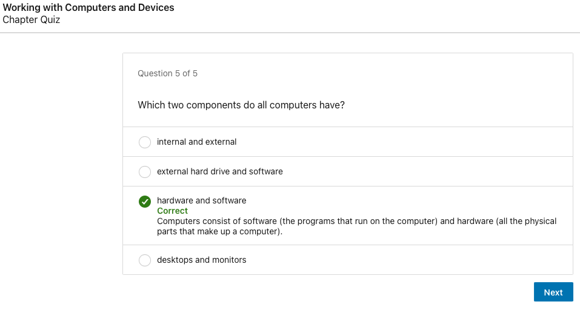
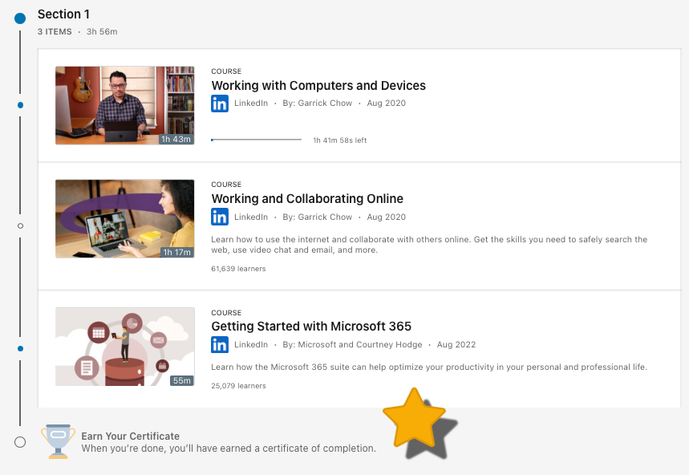
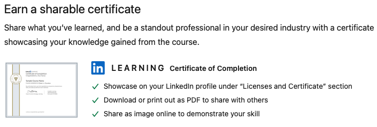

Curriculum Design Overview
The curriculum includes two primary modes of learning, 1) instructor-led discussions with guided activities, and 2) self-study activities consisting of digital learning modules (short videos followed by quizzes on the content). After each instructor meeting, participants have self-study work to complete that complements the current topics. The curriculum that was selected for the instructor-led component is the Digital Access and Resilience in Texas (DART) curriculum, and the digital learning platform selected for the self-study activities is LinkedIn Learning. Both are described below.
Instructor-Led Lessons
A search and review of existing digital literacy curriculum yielded a plethora of content. The selected is the Digital Access and Resilience in Texas (DART) curriculum that integrates beginning English language learning with foundational digital skills. The curriculum is intended to supplement existing English language instruction if the participant requires additional ESL work. The curriculum is designed with this target audience in mind, thus is appropriate for the expected use.
The DART curriculum provides the foundational English language and digital literacy skills that lower-level English language learners need to recognize and type the wide variety of characters required for most online passwords. The curriculum focuses on teaching students the skills necessary to accomplish eight major "milestones" on the way to successfully creating and logging in and out of an online account. Each of the curriculum milestones has associated prerequisite digital literacy and English language knowledge and skills that are summarized in Appendix A.
License
The authors chose to copyright the DART curricula under the creative commons Attribution-Non-Commercial-Share Alike CC BY-NC-SA. This gives others permission to modify the curriculum with credit given to the authors for non-commercial use. For additional information on the curriculum's copyright, please read the license deed and the legal code.
Foundational Digital Literacy Skills Included in the DART Curriculum:
- Recognizing and typing the names of uppercase and lowercase letters, numbers, and common symbols on a computer and smartphone keyboard.
- Turning on and shutting down a computer and putting it into and waking it up from sleep mode.
- Checking for/connecting to a wireless network and logging in and out of a computer.
- Opening and closing an app from the desktop, taskbar, and the taskbar search bar.
- Minimizing, maximizing, restoring down, moving, and resizing app windows.
- Typing in a website address into a browser website address bar, using the scroll bar, and clicking on hyperlinked text and images.
- Practicing basic digital security by avoiding web page advertisements.
- Performing a simple Internet search, clicking on a result, and returning to the search results using the browser back arrow.
- Creating a compliant username and complex password that is easy to remember for a Gmail account.
- Logging in and out of an account using a compliant username and complex password.
- Identifying and avoiding opening links in suspect emails and text messages.
- Identifying basic troubleshooting techniques.
Digital Learning Modules (self-study activities)
The digital learning platform selected for the self-study component is LinkedIn Learning. It is recommended to purchase account access to this platform for participants. However, if the budget does not permit this, there are digital literacy videos that Microsoft produced on LinkedIn Learning that are available without a subscription. I’ve used this platform for many years and appreciate the breadth and depth of content available on a range of topics (i.e., the subscription can be leveraged for other phases of the curriculum).
The selected videos are:
1. Learning Typing
Description: Stop the time-consuming hunting and pecking at the keyboard and learn how to type properly. In this course, you'll discover the advantages of knowing how to type, find out where your fingers should be positioned and which finger to use on each key, practice your positioning, and learn how to type for speed and accuracy. Instructor Anson Alexander will also show how to use a numeric keypad properly and measure your success, and our unique visuals allow you to see his fingers at work. Start now and learn to type your way to clearer, quicker communications, and use the course's game-like, interactive exercise file to practice each typing lesson and gauge your improvement.
Learning objectives: Summarize the most effective posture to utilize during typing. Identify the advantages of the DVORAK keyboard layout. Explain where your hands should rest on the keyboard. Summarize the process for effectively typing capital letters. Recall which finger should be used to press the function, control, option, and command keys. Identify the hand position used when typing using the numeric keypad. Video Source
2. Working with Computers and Devices
Technology has become intertwined with nearly every aspect of our lives. Many tasks like applying for jobs or shopping for clothes have become digitized. And in the new world of work, basic digital literacy can help job seekers unlock new opportunities. If you are interested in learning more about computers but aren't sure how to get started, then this course is for you. Join senior staff instructor Garrick Chow as he covers the basics of working with devices like computers, tablets, and smartphones. Using jargon-free language, he demystifies unfamiliar concepts and helps to solidify what you already knew.
Learn about the different hardware parts that make up a computer. Explore the fundamentals of working with operating systems and applications, as well as how to keep your computer secure. Plus, learn how to work with essential productivity programs like word processors and spreadsheet tools. Follow along and learn the technical skills you need to succeed in our digital world. Video Source
Example Video:
Example Quiz: 
3. Working and Collaborating Online
Whether you want to land a new job, stay in touch with loved ones, or even just research an interesting topic, you can find what you're looking for on the internet. This course was designed to equip professionals with the basic computing skills they need to use this powerful tool both at home and on the job. Using plain language, senior staff instructor Garrick Chow covers how to safely access information online, collaborate and connect with others using online productivity tools, and share content.
Garrick steps through the fundamentals of working online, including how to connect to the internet, make purchases, guard against phishing and online scams, and assess the authenticity of the information you find online. Plus, he shows how to use tools for connecting with others, explaining how to work with email, collaborate on documents, use instant messaging, and make video and audio calls. Tune in to get the skills you need to confidently navigate the online world. Video Source
Going further: Participants that want to complete extra modules can earn a Digital Literacy and Productivity Learning Pathway Certificate of Completion from LinkedIn Learning (add a credential to the resume!).
 